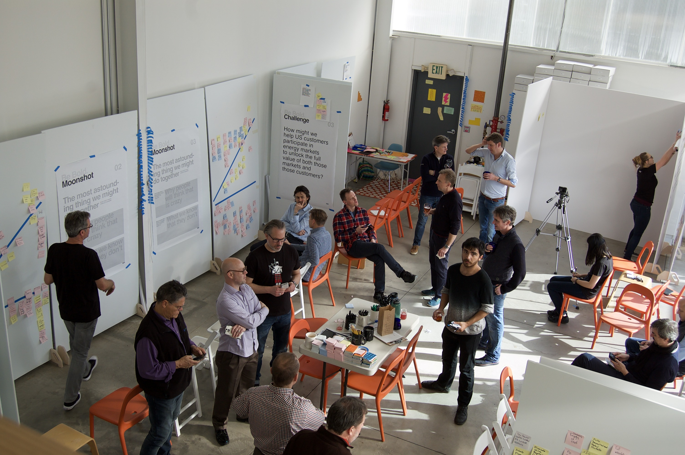
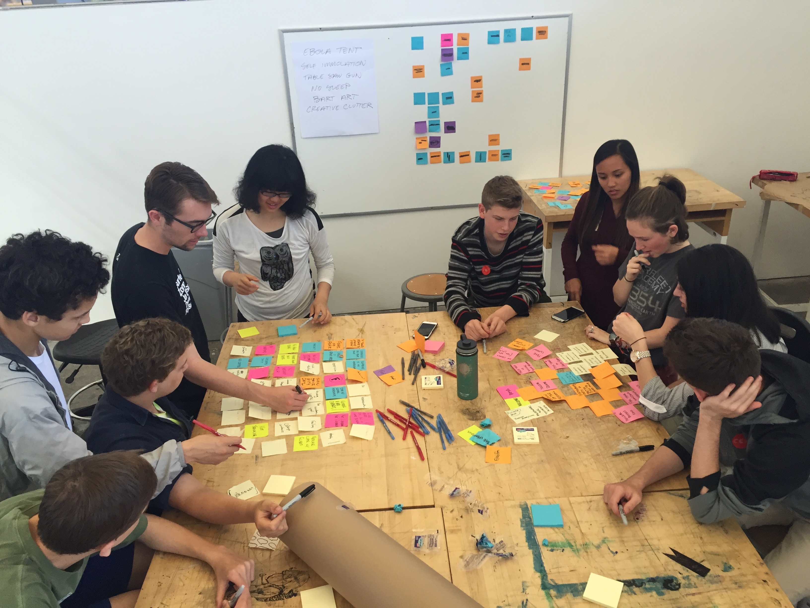
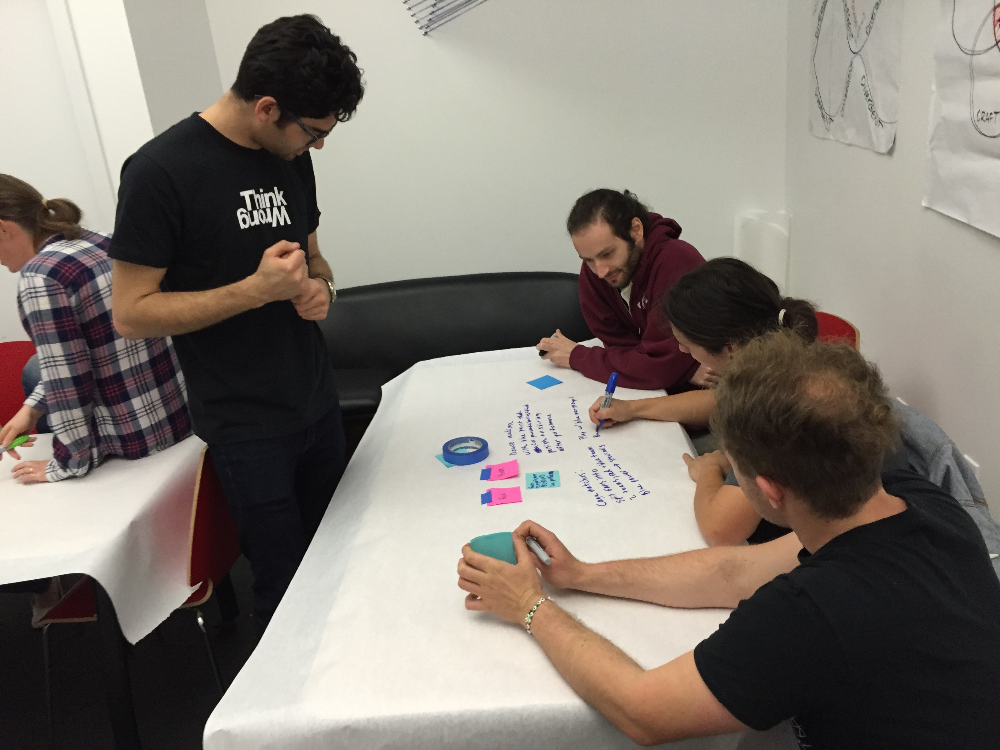

Think Wrong Institute is an interdisciplinary thinktank that creates immersive opportunities for participants to break away from status-quo thinking while working on vexing real-world problems. The program brings Project M 's philosophies, including the think wrong process, to the greater public.
Past Projects
Taiwan '17
Power House Blitz

Completed feasibility study and began data collection to assess energy needs for launch of a microgrid focused on taking Toucheng Farm off the grid. Partnered with Stone Edge Farm Microgrid Project out of Sonoma, California.
Contracted by Future Partners to support the facilitation of a three-day workshop on the future of energy production and consumption in the United States.
Tour De Pando
Bay School Blitz

Partnered with a local not-for-profit in Green River, Utah, to identify and analyze key opportunity areas to promote tourism in a depressed and forgotten region of the country.
In spring of 2016 facilitated a three-day workshop with high school students from The Bay School of San Francisco with the goal of imagining the 'future of student life' at Bay.
Taiwan '16
Zoo Labs

Led a week-long workshop for college students from around Asia to envision new educational programming for sustainable agriculture.
Implemented multiple one-day workshops with Zoo Labs as part of their Musician-In-Residency Program to diversify the musicians' business models for greater sustainability and success. During these two week long engagements several bands are able to push their music, business, and fanbase further.